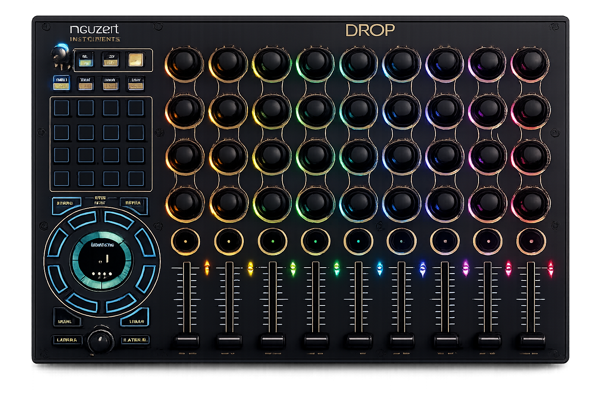

A control-surface integration for PreSonus Studio One 7 — clip & scene launch with LED feedback, a 64-channel mixer across 8 layers, and snapshot-driven scene firing.
MIT-licensed · macOS & Windows · not affiliated with Neuzeit Instruments or PreSonus.

Every physical control on the Drop is mapped to something useful in Studio One — nothing left dark.
The 4×4 pad grid fires Launcher clips with live colour & state LED feedback — empty, queued, playing.
Top row launches whole scenes; the session arrows move the Launcher focus box, plus a Stop-All.
Fire any scene from a Drop snapshot via Program Change — set the target scene per snapshot, on the fly.
8 faders across 8 layers (A–H) reach channels 1–64 for volume, with matching mutes.
Encoders map to free Knob controls; 32 encoder pushes become momentary buttons — assign via Control Link.
Studio One drives the Drop as clock master — set the Drop to Ext MIDI and it locks to your session tempo.
The clip grid, nav and stop use the Drop's built-in DAW notes; the mixer, knobs and snapshot launch use the config below.
| Drop control | MIDI | Studio One |
|---|---|---|
| 4×4 pad grid | ch16 notes | Launcher clip launch + LEDs |
| Top row | ch16 notes | Scene launch |
| Session arrows ◀ ▲ ▼ ▶ | ch16 84–87 | Move the Launcher focus box |
| Stop-All | ch16 127 | Launcher · Stop All |
| Faders (8 layers) | ch 1/3/5/7 CC | Channel volume · ch 1–64 |
| Mutes (8 layers) | ch 2/4/6/8 | Channel mute · ch 1–64 |
| Encoders ×32 | ch1 CC | Free Knob controls (Control Link) |
| Encoder pushes ×32 | ch2 notes | Free momentary buttons |
| Snapshots | ch13 Prog Change | Launch scene = program number |
Import drop-config/daw-init-studioone.json into the Drop (back up your own config first). Set encoder pushes to Temporary if you'll use them.
Copy the folder studio-one/Neuzeit/Drop/ into your Studio One User Devices/Neuzeit/Drop/ directory (macOS or Windows).
Settings ▸ External Devices ▸ Add… ▸ Neuzeit Instruments ▸ Drop. Set Receive-From and Send-To to the Drop's MIDI port.
Open the Launcher — the grid lights up and launches clips. Map encoder pushes to any parameter with Control Link.